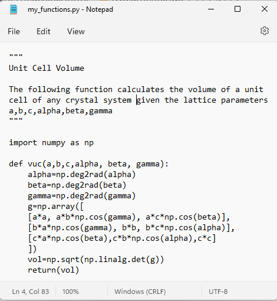
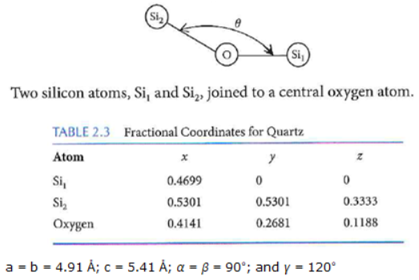

Importing Data from Files & Importing Your Own Functions
Contents
2. Importing Data from Files & Importing Your Own Functions#
Learning Objectives
Update your Anaconda software: see Updating Anaconda
Be able to import an excel file and plot data using matplotlib
Be able to write your own functions, store them in a *.py file, and import them in a new Jupyter notebook using
import
Important
When working through a lesson / reading this textbook, you should have a blank Jupyter Notebook open to try the codes written here. It is also important that you try changing parameters to see what the code is doing. Don’t treat the example codes I use as a black box. You are expected to know what every line is doing.
2.1. Import data from Excel#
Data File: Al7075_out.xlsx and lesson help from 2114: Importing Data using Pandas
Click above to download the excel file needed for this exercise
Were you able to successfully create and run a new jupyter notebook using your Cheat Sheet notebook from 2114? If not, fix it now. The cheat sheet won’t do you any good later if you can’t quickly get up to speed after only 3 months off.
If you were, then awesome!
{kind=link}
2.2. Writing, Saving, and Importing Your Own Functions#
The steps are as follows:
Write your own function in a jupyter notebook to make sure it works
Copy the function and paste into a text file using notepad
Save the file with a “.py” extension
2.2.1. Write your own function and test it#
Let’s say we want to find the volume of the unit cell in a given crystal structure and we are given the lattice parameters. If this was a cubic unit cell of edge length “a”, then the volume would just be \(a^3\).
What if our unit cell was triclinic with parameters a, b, c, \(\alpha\), \(\beta\), \(\gamma\) ? This is where we need the metric tensor, g, defined as:
The unit cell volume will then just be the square root of the determinate of g, \(\sqrt{\det(g)}\)
Hint
When dealing with matrices, you will want to use the numpy.linalg package. You can read the documentation here: https://numpy.org/doc/stable/reference/routines.linalg.html
# let's start by importing numpy. We will need this for the functions: array, cos, det, and rad2deg
import numpy as np
# We want to work out the form of our metric tensor using variables but the array needs numbers so we will
# use a simple for loop to replace our variables with numbers. This looks like:
for a,b,c,alpha,beta,gamma in [[1,2,3,90,90,90]]:
print(
np.array([
[a*a, a*b*np.cos(gamma), a*c*np.cos(beta)],
[b*a*np.cos(gamma), b*b, b*c*np.cos(alpha)],
[c*a*np.cos(beta),c*b*np.cos(alpha),c*c]
])
)
# I tried to place a lot of spacing above so you could see how the brackets all align but we don't need to do this.
# Below I'll remove most of the space.
# Also notice our output isn't quite right. The cos(90) should be zero. What is wrong?
[[ 1. -0.89614723 -1.34422085]
[-0.89614723 4. -2.6884417 ]
[-1.34422085 -2.6884417 9. ]]
Important
Remember that trig functions expect radians not degrees so let’s use the deg2rad() function to convert.
for a,b,c,alpha,beta,gamma in [[1,2,3,90,90,90]]:
print(np.array([[a*a, a*b*np.cos(np.deg2rad(gamma)), a*c*np.cos(np.deg2rad(beta))],
[b*a*np.cos(np.deg2rad(gamma)), b*b, b*c*np.cos(np.deg2rad(alpha))],
[c*a*np.cos(np.deg2rad(beta)),c*b*np.cos(np.deg2rad(alpha)),c*c]]))
# notice our off diagonal terms in the output below are 10^-16. This is zero within our floating point precision.
[[1.0000000e+00 1.2246468e-16 1.8369702e-16]
[1.2246468e-16 4.0000000e+00 3.6739404e-16]
[1.8369702e-16 3.6739404e-16 9.0000000e+00]]
Next we want to find the sqrt of the determinant of the gmatrix. This is the unit cell volume. The det() function is in the subpackage linalg of numpy, i.e. np.linalg.det().
for a,b,c,alpha,beta,gamma in [[1,2,3,90,90,90]]:
gmatrix=np.array([[a*a, a*b*np.cos(np.deg2rad(gamma)), a*c*np.cos(np.deg2rad(beta))],
[b*a*np.cos(np.deg2rad(gamma)), b*b, b*c*np.cos(np.deg2rad(alpha))],
[c*a*np.cos(np.deg2rad(beta)),c*b*np.cos(np.deg2rad(alpha)),c*c]])
print(np.sqrt(np.linalg.det(gmatrix)))
6.0
The above cells were just to test our code for the gmatrix and the volume output. Now we just need to write this as a function and remove the “for” statement. We can also add some information about our function.
Important
Don’t forget to include all import statements needed for the function to work. Your function will be copied into its own file so it needs to be self contained.
"""
Unit Cell Volume
The following function calculates the volume of a unit cell of any crystal system
given the lattice parameters a,b,c,alpha,beta,gamma
"""
import numpy as np
def vuc(a,b,c,alpha,beta,gamma):
gmatrix=np.array([[a*a, a*b*np.cos(np.deg2rad(gamma)), a*c*np.cos(np.deg2rad(beta))],
[b*a*np.cos(np.deg2rad(gamma)), b*b, b*c*np.cos(np.deg2rad(alpha))],
[c*a*np.cos(np.deg2rad(beta)),c*b*np.cos(np.deg2rad(alpha)),c*c]])
return(np.sqrt(np.linalg.det(gmatrix)))
vuc(2,3,4,90,90,90)
23.999999999999993
We could clean things up a little bit if we just import the functions we need from numpy. Then we won’t need to include np. before each call.
"""
Unit Cell Volume
The following function calculates the volume of a unit cell of any crystal system
given the lattice parameters a,b,c,alpha,beta,gamma
"""
from numpy import cos, array, deg2rad, sqrt
from numpy.linalg import det
def vuc(a,b,c,alpha,beta,gamma):
g= array([[a*a, a*b*cos(deg2rad(gamma)), a*c*cos(deg2rad(beta))],
[b*a*cos(deg2rad(gamma)), b*b, b*c*cos(deg2rad(alpha))],
[c*a*cos(deg2rad(beta)),c*b*cos(deg2rad(alpha)),c*c]])
return(sqrt(det(g)))
vuc(2,3,4,90,90,90)
23.999999999999993
2.2.2. Copy your function to a text file and save with extension “.py”#
Download notepad++ https://notepad-plus-plus.org/downloads/
Now that we know the above function works, we can use a text editor (notepad++) to paste it into a text file with the extension “.py”. I called my file: “my_func.py”. Make sure you save the file in the same directory as the notebook in which you want to import it. You can also tell windows to always open *.py files with notepad++ to make it easier to edit later.
Note
Some text file editors will save your file as “.py.txt”. In this case, you will have to go back in with your file explorer and delete the .txt extension.
Here is the contents of my text file named “my_functions.py”:
{kind=link}
2.2.3. Import your *.py file into a new Jupyter notebook and test your function#
Open a new notebook and import your function file. In my case, the command would be import my_functions. After importing, go ahead and test your function. In my case I would run my_functions.vuc(2,3,4,90,90,90). Add another function to the same text file and test it.
I could also import using import my_functions as mf. Then I can shorten the code to use vuc(). Now I would run mf.vuc(2,3,4,90,90,90).
{kind=link}
Note
We have seen this syntax before. For example, we import the numpy package using import numpy as np, and then to use a function within numpy (such as arange()) we would use np.arange().
2.3. Exercises#
2.3.1. Problem 1#
Open a new Jupyter notebook and import the data from the excel file Al7075_out.xlsx. Using matplotlib, plot stress (y) vs strain (x), label your axes, and use blue triangles for your data points. Your plot should look like:
{kind=link}
Fig. 2.1 Stress-Strain response for Al7075 in tension.#
2.3.2. Problem 2#
Write a function that takes the variables: (applied_load, initial_area, initial_length, and length_under_load) and returns the elastic modulus in units of GPa. Your function should include a comment area that specifies the units that are expected for each variable.
2.3.3. Problem 3#
Copy the function from the previous problem into a text file and save with the extension “.py”. Open a new notebook, import your .py file, and calculate the elastic modulus for a sample under an applied load of 5600 N resulting in a sample elongation of \(7.35 \times 10^{-2}\) mm. The initial sample diameter and length are 10 mm and 100 mm respectively.
2.3.4. Problem 4#
Write a function that uses the metric tensor to find the angle \(\theta\) in degrees between 3 atoms as shown for example below. Your function should allow you to enter the fractional coordinates of the three atoms, [x1,y1,z1], [x2,y2,z2], and [x3,y3,z3], and the lattice parameters, a,b,c,alpha,beta,gamma. You can use the numbers below to test your code. The Oxygen - \(Si_1\) bond length will be 1.60674 \(\mathring{A}\) and the Oxygen - \(Si_2\) bond length will be 1.61035 \(\mathring{A}\).
{kind=link}
The vector, \(\overline{v1}\), connecting the \(Si_2\) and O atoms is given by \(\overline{v1}=Si_2 - O = \left[x2,y2,z2\right]-\left[x1,y1,z1\right]=\left[x2-x1,y2-y1,z2-z1\right]\)
The magnitude of this vector (i.e. the bond length) is given by \(\mid\overline{v1}\mid=\sqrt{\overline{v1}\cdot \overline{\overline{g}} \cdot\overline{v1}}\) or in matrix format:
Now the cosine of the angle between the \(Si_2\) - O - \(Si_1\) atoms would be given by:
where \(\overline{v2}=Si_1 - O\)
When performing your dot products of \(\overline{v2}\), \(\overline{\overline{g}}\), and \(\overline{v1}\), you can use either of the two formats below. You do not need to worry about making a column versus row vector. Just define your vector as [1,2,3] for example.
np.dot(np.dot(A, B), C)
np.linalg.multi_dot([A,B,C])